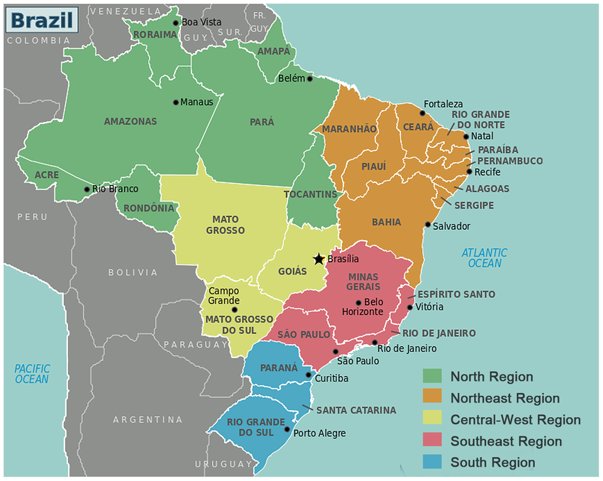

Regions of Brazil
Brazil is the largest country in both South America and Latin America. At 8.5 million square kilometres and with over 211 million people, Brazil is the world's fifth-largest country by area and the sixth most populous. Its capital is Brasília, and its most populous city is São Paulo.
The federation is composed of the union of the 26 states and the Federal District. It is the largest country to have Portuguese as an official language and the only one in the Americas; it is also one of the most multicultural and ethnically diverse nations, due to over a century of mass immigration from around the world; as well as the most populous Roman Catholic-majority country.
Brazil is geopolitically divided into five regions; each region is composed of three or more states. Although officially recognized, the division is merely academic, considering geographic, social and economic factors, among others, and has no political effects other than orientating Federal-level government programs.